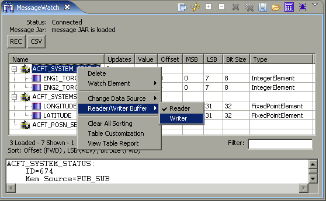

Read vs. Write Buffer
What it is
Each message can be shown as either a "Reader" or a "Writer", that is
either an output of the processor under test, or an input to the processor
under test, respectively. The curren tstate is depicted as either a
'R' or a 'W' on the message icon. In the picture below, all of the
messages are currently readers.
How to do it
Right click on a message in the Message Watch table, and choose
"Reader/Writer Buffer" from the menu. Select the desired state.
